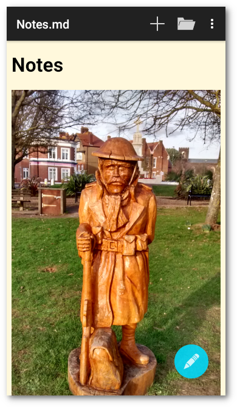
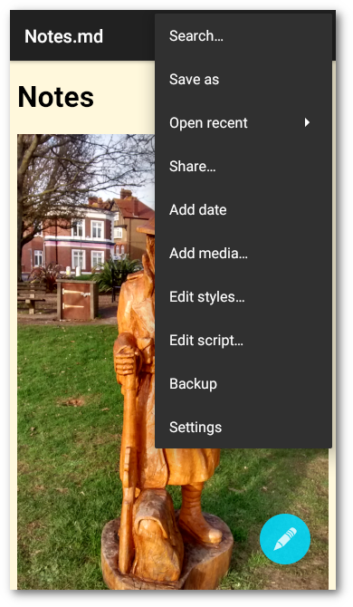
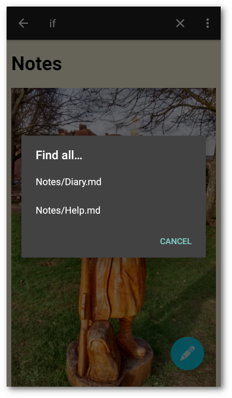
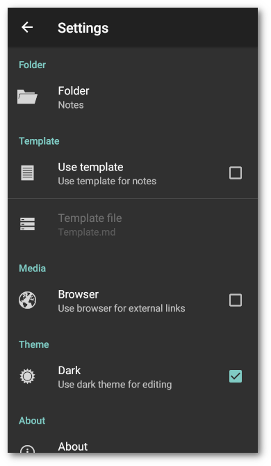

Introduction
Notes is an android notebook for keeping notes or a journal about whatever you wish to write about.
 
Features
- Notes saved in text files
- Use markdown formatting
- Optional note template
- Display media
- Display OpenStreetMap maps
- Share notes
- Add date and time
- Add media from media providers
- Receive media from other apps
- Receive geo uris from other apps
- Incremental search of notes
- Dark or light theme for editing
- Optional CSS styles
- Optional JavaScript scripts
- Back up notes to a zip file
- Optional edit cursor position control
Using
Toolbar
The toolbar items which won’t necessarily all appear at once:
- New – Start a new note
- Save – Save note
- Open – Open an existing note
- Search – incremental search of note
And on the menu:
- Find all – Find all notes containing search text
- Open recent – Pop up a list of recent files
- Clear list – Clear list of recent files
- Share – Share note
- Save as – Save note in another file
- Add date – Add the current date and time
- Add media – Add media from media providers
- Edit styles – show an editor to edit the custom styles
- Edit script – show an editor to edit custom javascript
- Backup – backup notes to a zip file
- Settings – Show the settings
Help
You may put a link [Help](file:///android_asset/help.md) to the help
file in the app assets in a note. The file will be loaded and may be
saved using the Save as menu entry.
Double tap
In the formatted view a double tap on the screen will switch to the edit view in approximately the same position in the markdown text. The accuracy is dependent on the text formatting and media in the note.
Editing
In the formatted view the Edit button floating above the page allows editing notes. The Accept button restores the formatted view. A long touch on the button hides it until the device is rotated or a long touch on the page.
See Markdown for markdown syntax.
Scrolling
Scrolling the page up will temporarily hide the floating button. Scrolling down restores it.
Search
You may search notes, the search will update as text is entered into the search field. Use the search widget or keyboard action button to find the next match.
Find All
You may find all notes that contain the current search text. This menu item will only appear while the search widget is active. A dialog will pop up with a list of matching notes. Touch an entry to open that note. You may repeat this or refine the search text to find the desired note.
Content
 
Template
You may use a note template. If a template is set it will be copied to a new note.
Text
You may receive text clips from another app. The text will be added at the current cursor position, or in a new note if no note is open.
Media
You may store media in the note storage folder and reference them in
notes, so markdown text  will display cat.jpg
stored in the note folder. You may either add media from media
providers like file managers or image managers or receive media sent
by other apps. Media added will be added at the current cursor
position. Media sent by other apps will be added at the current cursor
position, or in a new note if no note is open. Content URIs
(content://) sent by some media providers and apps will be resolved
to file URIs (file:///) if possible. Media will be added using
markdown image syntax (), which will be parsed into
an HTML5 media player, text clips will be added as above, URLs will be
added as a link. Media added from removable SD cards not part of the
device storage may work but may not be persistent and is not supported.
Latex
Notes doesn’t support LaTeX, but it is possible to use an external site to add LaTeX formatted images.

\sum_{i=1}^{n}x_{i}^{2}

If you don’t intend to change the image, you can copy it and use that instead, which will then work offline.
Links
You may put external links in notes, so
[DuckDuckGo](https://duckduckgo.com) will show a link to
DuckDuckGo. Links will be followed if
touched. Use the back button in the toolbar or the navigation bar to
return to the note. Links to other notes may added as a relative
reference [AnotherNote](AnotherNote.md).
Maps
You may put OpenStreetMap maps in
notes with a geo URI . Geo uris received from
other apps will be added at the current cursor position, or in a new
note if no note is open.
Cursor Position
You may put a line in a note to control or remember the edit cursor
position. This will not appear in the markdown view. Put [<]: # on a
line for the start of an note, [>]: # for the end of a note. Put
[#]: # for the cursor position to be remembered. There should be no
other text on the line. The current cursor position will be added when
the note is saved [#]: # (nnn). Because notes are only saved if they
are changed, moving the cursor with no other change will not move the
saved position.
Styles
You may add custom styles to the markdown formatting by placing a
styles.css file in the Notes/css folder, which will replace the
built in styles file which simply limits the width of images to the
page width. Use the built in editor to create a styles file. You must
use the editor accept tick button to save the edits.
Caution – There is no such thing as a markdown syntax error, but syntax errors in a styles file may cause unpredictable results and affect all notes. See CSS Tutorial.
You may include the built in styles file with an @import statement
@import "file:///android_asset/styles.css"; or
@import url("file:///android_asset/styles.css");, which should be on
the first line.
Scripts
You may add custom javascript to be loaded into all notes by placing a
script.js file in the Notes/js folder. Use the built in editor to
create a script file. You must use the editor accept tick button to
save the edits. Errors in the script will be logged by the
WebView
which displays the page. See Javascript
tutorial.
If you want to use javascript libraries or write a large script it might be a good idea to use the Google Closure Compiler to check and minimise your code. It will handle multiple input files.
Manage
Backup
You may create a backup of all your notes in a zip file. The file
will have the same name as the notes folder, default Notes.zip.
Sync
Android cloud storage apps when last tested appeared not to be capable of syncing a real storage folder on the device. However Syncthing does just that and can sync your notes folder with other devices and desktop computers.
SD Cards
Android allows removable SD cards to be used like a USB stick or as part of the device storage. Storing notes on a removable SD card not part of the device storage may work on some devices, but is not supported. Adding media may also work, but may not be persistent.
Settings

Settings
- Folder – Change notes storage folder. Caution – notes, styles and scripts will not be moved
- Template – Set a note template. Use the dialog to choose a file.
- Browser – Use browser for external links
- Dark theme – Use dark theme for editing
- About – Show app version, licence and credits